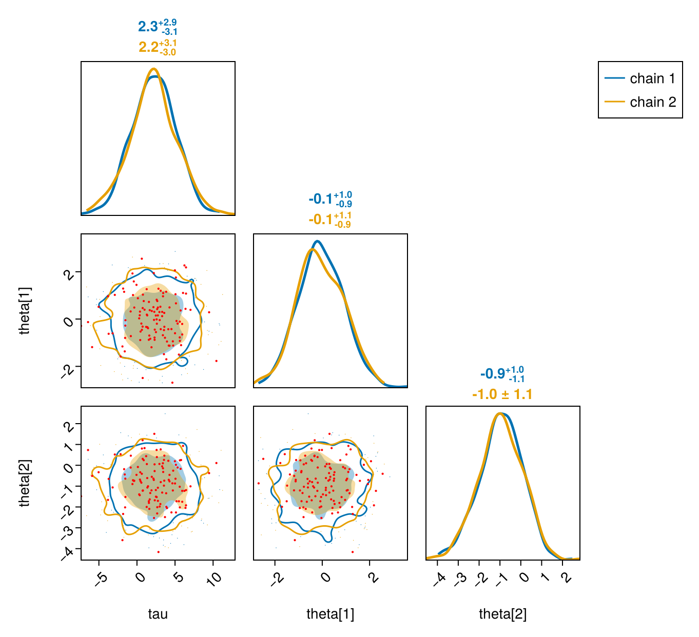
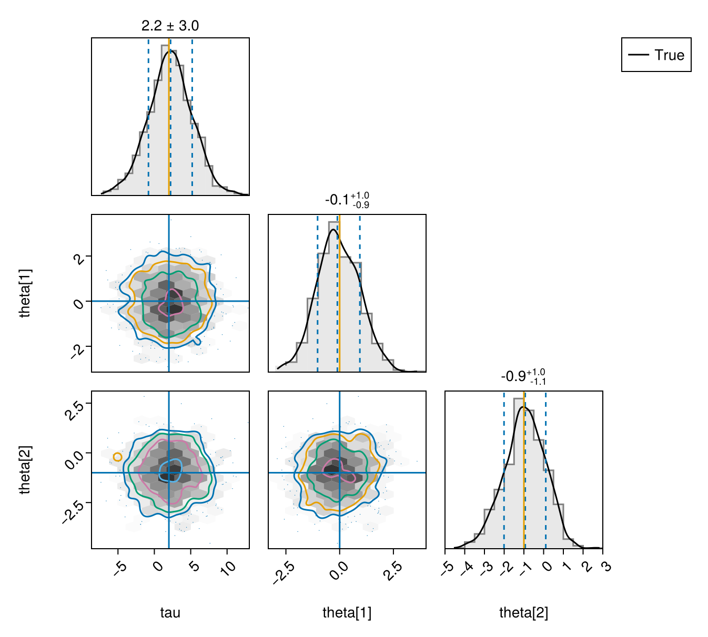
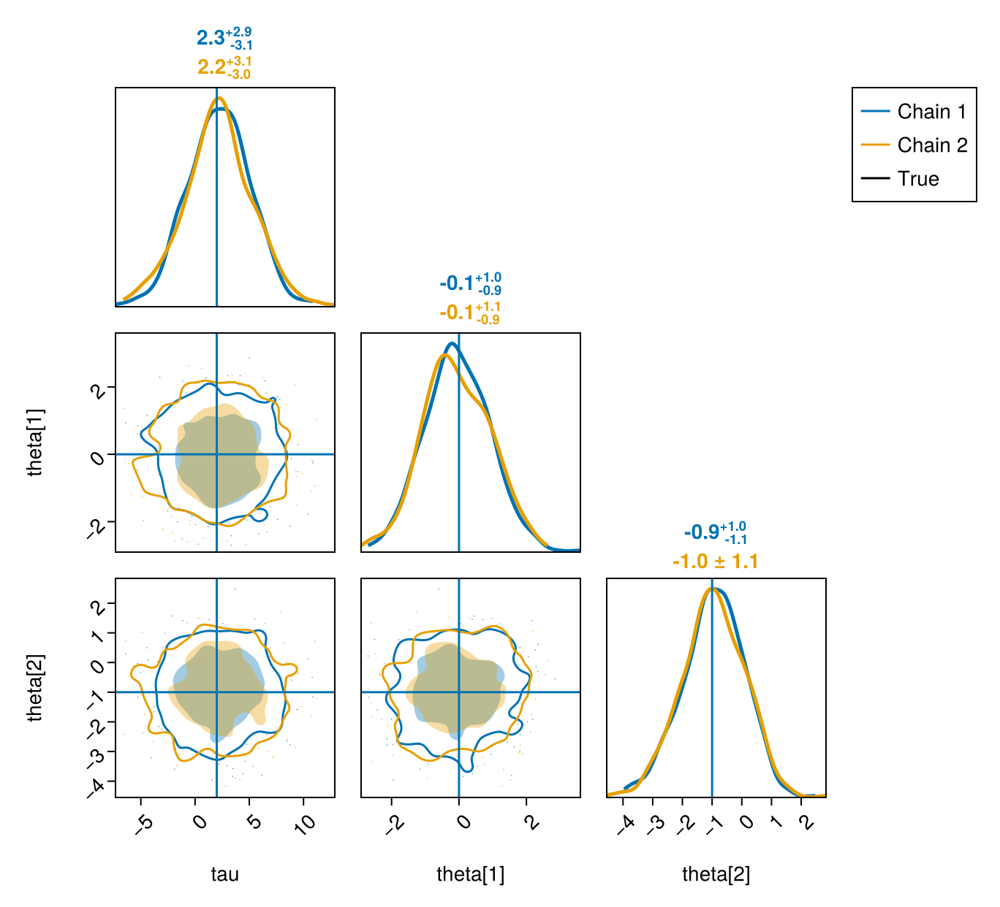

PairPlots.jl
Documentation for PairPlots.jl ↗
FlexiChains provides two ways to interact with PairPlots.jl.
pairplot()
Firstly, you can directly call pairplot(chn[, param_or_params]) on a FlexiChain. This is a convenience method which includes extra functionality for e.g. highlighting divergent transitions. To demonstrate this we'll create a fake FlexiChain with some random data. (Our usual EXAMPLE_CHAIN only contains 10 iterations, so leads to some very poor plots.)
using FlexiChainsusing FlexiChains: FlexiChain, Parameter, Extra, OrderedDictchn = FlexiChain{VarName}( 500, 2, OrderedDict( Parameter(@vn(mu)) => randn(500, 2), Parameter(@vn(tau)) => randn(500, 2) .* 3 .+ 2, Parameter(@vn(theta)) => [[randn(), randn() - 1.0] for _ in 1:500, _ in 1:2], Extra(:is_divergent) => rand(500, 2) .< 0.1, ),)╭─FlexiChain (500 iterations, 2 chains) ───────────────────────────────────────╮
│ ↓ iter = 1:500 │
│ → chain = 1:2 │
│ │
│ Parameters (3) ── VarName │
│ Float64 mu, tau │
│ Vector{Float64} theta (2,) │
│ │
│ Extras (1) │
│ Bool is_divergent │
╰──────────────────────────────────────────────────────────────────────────────╯When sampling with NUTS, the resulting chain will (hopefully!) contain an Extra Boolean indicating whether or not the transition was divergent. In the example chain above, this has been stored in the Extra(:is_divergent) key. If you are sampling with e.g. Turing.jl, this key should be named Extra(:numerical_error). Either way, this can be passed to pairplot() to highlight the divergent transitions in the plot.
Carrying on with our plotting:
# Limit the parameters being plotted for readabilityvns = [@vn(tau), @vn(theta[1]), @vn(theta[2])]using PairPlots, CairoMakiepairplot(chn, vns; divergences=:is_divergent)
Conversion to Series
For more low-level control, you can also convert a FlexiChain into a PairPlots.Series, so that you can combine it with other data or fixed values in custom plots.
# Just some random values.expected_means = (tau=2.0, var"theta[1]"=0.0, var"theta[2]"=-1.0)pairplot(PairPlots.Series(chn[vns]), PairPlots.Truth(expected_means, label="True"))
Notice that Series(chn) will pool the samples in all chains together. If you want to plot each chain separately, split them up into separate Series objects:
pairplot( ( PairPlots.Series(chn[vns, chain=i], label="Chain $i") for i in FlexiChains.chain_indices(chn) )..., PairPlots.Truth(expected_means, label="True"),)
Docstrings
PairPlots.pairplot — Function
PairPlots.pairplot(
chn::FlexiChain[, param_or_params];
args::Tuple=(),
pool_chains::Bool=false,
divergences=nothing,
divergences_kwargs::NamedTuple=(; markersize=3, color=:red),
kwargs...
)Create a pair plot for the given chain. Note that PairPlots.jl uses Makie.jl as its plotting backend, so you will additionally need to load a Makie backend (e.g. with using GLMakie or using CairoMakie) before calling this function.
If no parameters are specified, this will plot all parameters in the chain. Note that non-parameter, i.e. Extra, keys are excluded by default. If you want to plot all keys, you can explicitly pass all keys with pairplot(chn, :).
Keyword arguments
args: a tuple of additional arguments to pass toPairPlots.pairplot. This can be used to specify additional series to plot, for example.pool_chains: controls whether to pool all chains together into a single series, or to plot each chain separately.divergences: specifies a key name in the chain that contains a boolean array indicating which samples are divergences. If provided, divergent samples will be highlighted in the plot. Note that for HMC/NUTS chains sampled with Turing.jl, the key name for divergences is (as of Turing v0.43):numerical_error. By default this isnothing, which disables plotting of divergences (because not all chains will have this information).divergences_kwargs: aNamedTupleof keyword arguments which is eventually passed toMakie.scatter, which can be used to control the appearance of the points. Defaults to(; markersize=3, color=:red).
Other keyword arguments are passed to PairPlots.pairplot.
PairPlots.Series — Type
PairPlots.Series(chn::FlexiChain; split_varnames=true, kwargs...)Create a PairPlots.Series from the given FlexiChain. The series data will contain one column for each key in the chain.
Note that this function will include all keys in the chain, including Extra keys. If you only want to include a subset of keys, you should first subset the chain, for example with chn[[key1, key2, ...]], and then pass that subsetted chain in.
If split_varnames is true, then parameters in the chain will be split into their constituent real-valued elements. This is necessary for plotting. In practice there should never be any reason for end users to set this to false, unless you already know that your chain contains only scalar variables and you want to avoid the cost of splitting the variable names again.